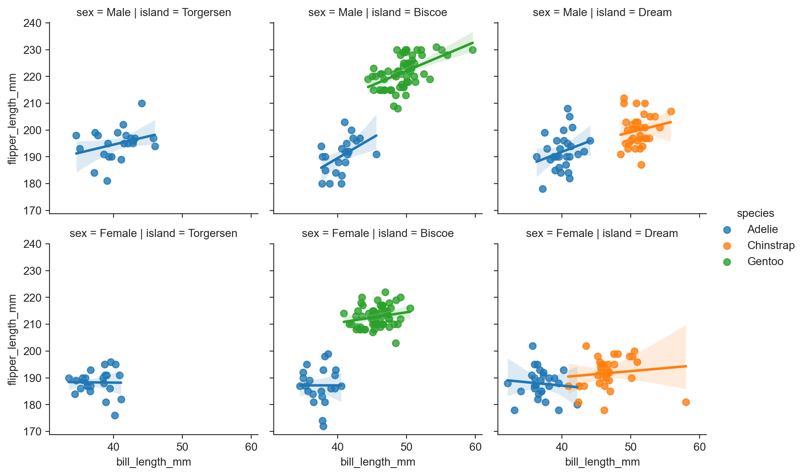
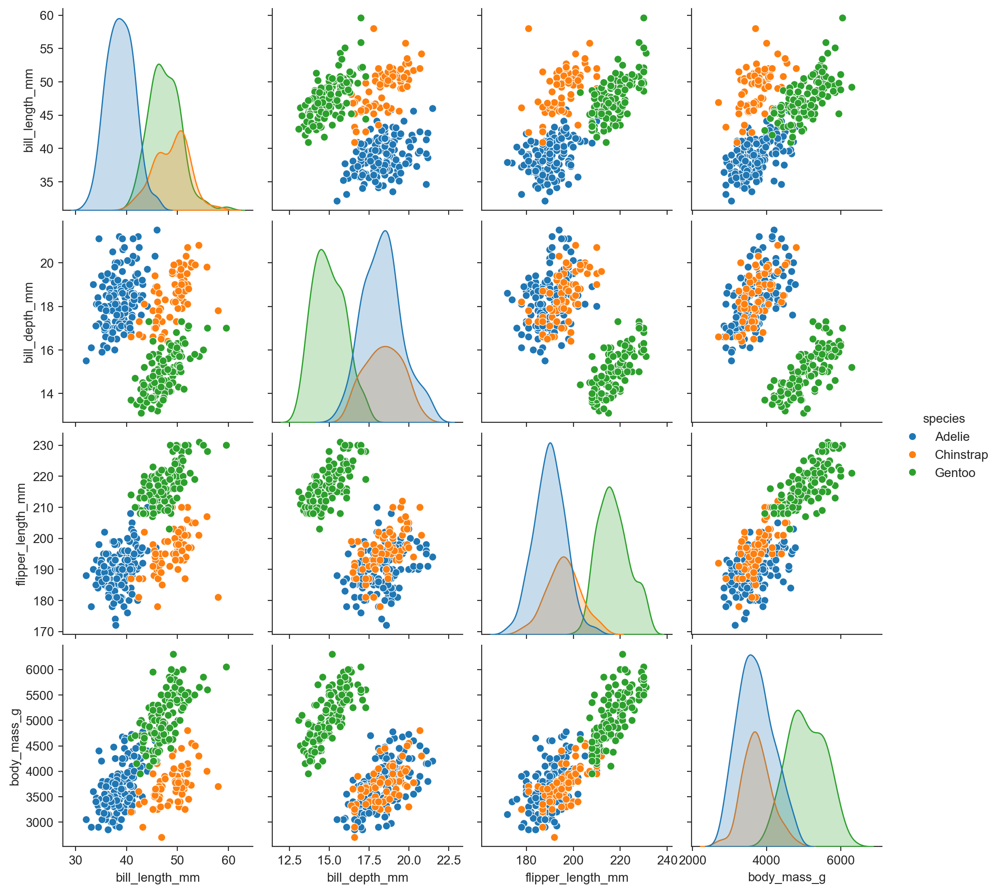

import matplotlib.pyplot as plt
import seaborn as sns
sns.set_style("darkgrid")
# make graphics sharper on a good screen
from matplotlib_inline.backend_inline import set_matplotlib_formats
set_matplotlib_formats('retina', 'png')Plots with matplotlib
plt.scatter(penguins.bill_length_mm, penguins.flipper_length_mm) ; # semi colon makes last value Nonesns.set_style("ticks")
# sns.set_style("darkgrid")
# sns.set_style("whitegrid")
# sns.set_style("white")
# sns.set_style("dark")
plt.scatter(penguins.bill_length_mm, penguins.flipper_length_mm)
sns.despine()plt.hist(penguins.bill_length_mm) ;Better plotting with seaborn (on top of matplotlib)
sns.scatterplot(data=penguins, x="bill_length_mm", y="flipper_length_mm") ;sns.scatterplot(data=penguins, x="bill_length_mm", y="flipper_length_mm", hue="species") ;sns.scatterplot(data=penguins, x="bill_length_mm", y="flipper_length_mm", hue="species", style="sex") ;sns.scatterplot(data=penguins, x="bill_length_mm", y="flipper_length_mm", hue="species",
style="sex", size="body_mass_g") ;def legend_outside():
plt.legend(bbox_to_anchor=(1.05, 1), loc='upper left', borderaxespad=0)sns.scatterplot(data=penguins, x="bill_length_mm", y="flipper_length_mm", hue="species", style="sex", size="body_mass_g") ;
legend_outside()
plt.title("Penguin measurements")
plt.ylabel("flipper length (mm)")
plt.xlabel("bill length in (mm)") ;Wide or long data
Wide format data:
penguins[['bill_length_mm', 'bill_depth_mm']]| bill_length_mm | bill_depth_mm | |
|---|---|---|
| 0 | 39.1 | 18.7 |
| 1 | 39.5 | 17.4 |
| 2 | 40.3 | 18.0 |
| 3 | NaN | NaN |
| 4 | 36.7 | 19.3 |
| ... | ... | ... |
| 339 | NaN | NaN |
| 340 | 46.8 | 14.3 |
| 341 | 50.4 | 15.7 |
| 342 | 45.2 | 14.8 |
| 343 | 49.9 | 16.1 |
344 rows × 2 columns
Long format data:
long_df = penguins.melt(value_vars=['bill_length_mm', 'bill_depth_mm'])
long_df| variable | value | |
|---|---|---|
| 0 | bill_length_mm | 39.1 |
| 1 | bill_length_mm | 39.5 |
| 2 | bill_length_mm | 40.3 |
| 3 | bill_length_mm | NaN |
| 4 | bill_length_mm | 36.7 |
| ... | ... | ... |
| 683 | bill_depth_mm | NaN |
| 684 | bill_depth_mm | 14.3 |
| 685 | bill_depth_mm | 15.7 |
| 686 | bill_depth_mm | 14.8 |
| 687 | bill_depth_mm | 16.1 |
688 rows × 2 columns
long format is required when you want a number of columns to appear as a “variable” in the plot. As in the example below where the color “variable” reflects whether the point is bill_depth_mm or bill_length_mm.
Retain other information for each observation:
long_df = penguins.melt(id_vars=['species', 'body_mass_g', 'island'], value_vars=['bill_length_mm', 'bill_depth_mm'])
long_df| species | body_mass_g | island | variable | value | |
|---|---|---|---|---|---|
| 0 | Adelie | 3750.0 | Torgersen | bill_length_mm | 39.1 |
| 1 | Adelie | 3800.0 | Torgersen | bill_length_mm | 39.5 |
| 2 | Adelie | 3250.0 | Torgersen | bill_length_mm | 40.3 |
| 3 | Adelie | NaN | Torgersen | bill_length_mm | NaN |
| 4 | Adelie | 3450.0 | Torgersen | bill_length_mm | 36.7 |
| ... | ... | ... | ... | ... | ... |
| 683 | Gentoo | NaN | Biscoe | bill_depth_mm | NaN |
| 684 | Gentoo | 4850.0 | Biscoe | bill_depth_mm | 14.3 |
| 685 | Gentoo | 5750.0 | Biscoe | bill_depth_mm | 15.7 |
| 686 | Gentoo | 5200.0 | Biscoe | bill_depth_mm | 14.8 |
| 687 | Gentoo | 5400.0 | Biscoe | bill_depth_mm | 16.1 |
688 rows × 5 columns
sns.scatterplot(data=long_df, x='body_mass_g', y='value', hue='variable', style='species')
legend_outside()sns.boxplot(data=long_df, x='species', y='value', hue='variable') ;sns.boxplot(data=long_df, x='variable', y='value', hue='species') ;sns.boxplot(data=long_df, x='species', y='value', hue='variable') ;Plots with multiple facets
g = sns.FacetGrid(penguins, col="island")
g ;
Map plotting to each facet:
g = sns.FacetGrid(penguins, col="island", hue="species") ;
g.map(sns.scatterplot, "bill_length_mm", "flipper_length_mm") ;Grid of facets representing combinations of two variables:
g = sns.FacetGrid(penguins, row="sex", col="island", hue="species") ;
g.map(sns.scatterplot, "bill_length_mm", "flipper_length_mm") ;g = sns.FacetGrid(penguins, row="sex", col="island", hue="species") ;
g.map(sns.regplot, "bill_length_mm", "flipper_length_mm") ;sns.lmplot(data=penguins, x="bill_length_mm", y="flipper_length_mm", row="sex", col="island", hue="species", height=3) ;
FacetGrid.map vs. FacetGrid.map_dataframe
When you use FacetGrid.map(func, "col1", "col2", ...), the function func is passed the values of the columns "col1" and "col2" (and more if needed) as parameters 1 and 2 (args[0], args[1], …). In addition, the function always receives a keyword argument named color=.
def scatter(*args, **kwargs):
return plt.scatter(args[0], args[1], **kwargs)
g = sns.FacetGrid(penguins, row="sex", col="island", hue="species") ;
g.map(scatter, "bill_length_mm", "flipper_length_mm") ;When you use FacetGrid.map_dataframe(func, "col1", "col2", ...), the function func is passed the names "col1" and "col2" (and more if needed) as parameters 1 and 2 (args[0], args[1], …), and the filtered dataframe as keyword argument data=. In addition, the function always receives a keyword argument named color=.
def scatterplot(*args, **kwargs):
return sns.scatterplot(x=args[0], y=args[1], **kwargs)
g = sns.FacetGrid(penguins, row="sex", col="island", hue="species") ;
g.map_dataframe(scatterplot, "bill_length_mm", "flipper_length_mm") ;
g = sns.FacetGrid(penguins, row="sex", col="island", hue="species") ;
g.map(sns.histplot, "bill_length_mm") ;g = sns.FacetGrid(penguins, row="sex", col="island", hue="species") ;
g.map(sns.kdeplot, "bill_length_mm") ;sns.pairplot(penguins, hue="species") ;
sns.pairplot(penguins, hue="sex") ;